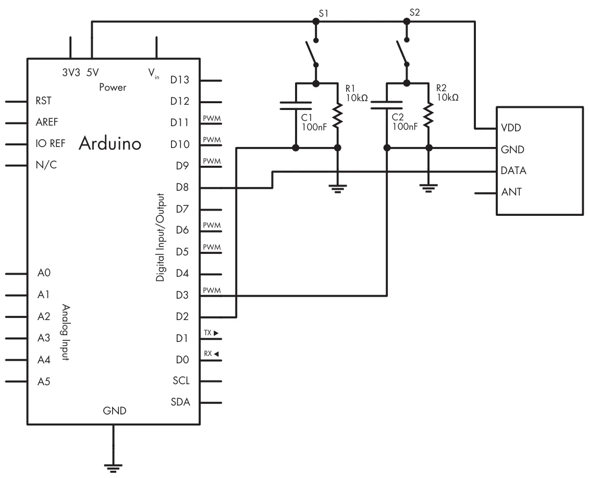
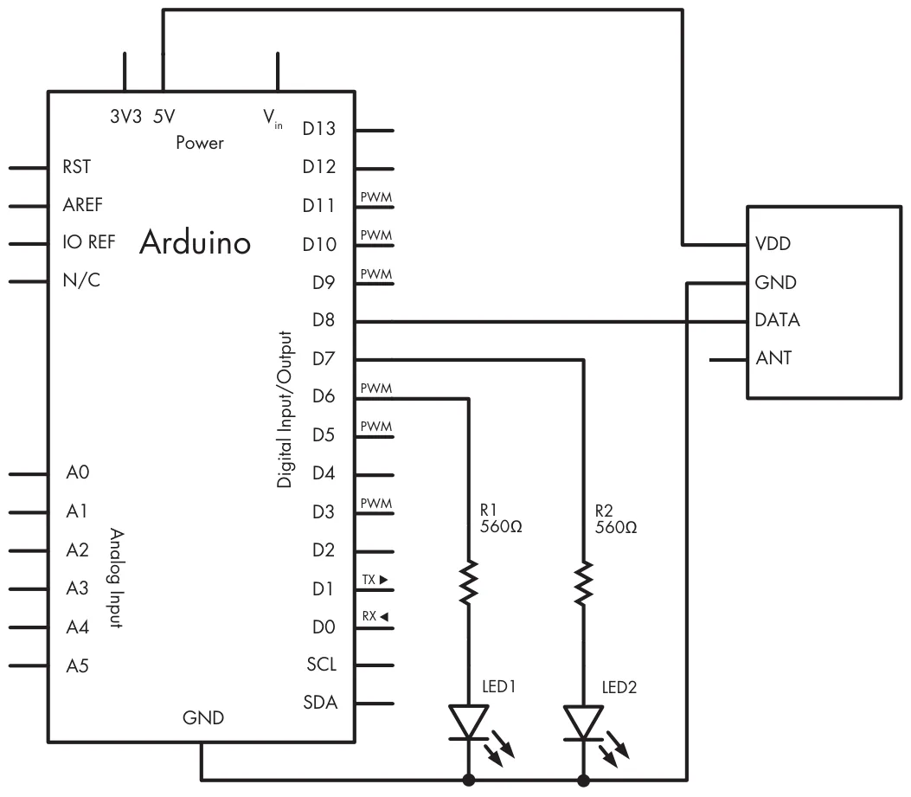
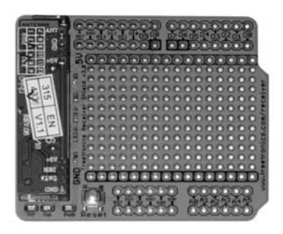

We’ll remotely control two digital outputs: You’ll press buttons connected to one Arduino board to control matching digital output pins on another Arduino located some distance away. This project will show you how to use the RF Link modules and how to determine what sort of distance you can achieve remote control with the modules before you commit to using the modules for more complex tasks. (In open air, the distance you can achieve is generally about 100 meters, but the distance will be less when you are indoors or when the modules are between obstacles.)
The Hardware for the Transmitter Circuit
The following hardware is required for the transmitter circuit:
- Arduino and USB cable
- One 9 V battery and DC socket cable (as used in Chapter 12)
- One 433 MHz RF Link transmitter module (such as SparkFun part number WRL-10534)
- Two 10 kΩ resistors (R1 and R2)
- Two 100 nF capacitors (C1 and C2)
- Two push buttons
- One breadboard
The Transmitter Schematic
The transmitter circuit consists of two push buttons with debounce circuitry connected to digital pins 2 and 3, and the transmitter module wired as described earlier, as shown in Figure 14-3.

The Hardware for the Receiver Circuit
The following hardware is required for the receiver circuit:
- Arduino and USB cable
- One 9 V battery and DC socket cable (as used in Chapter 12)
- One 433 MHz RF Link receiver module (such as SparkFun part number WRL-10532)
- One breadboard
- Two LEDs of your choice
- Two 560 Ω resistors (R1 and R2)
The Receiver Schematic
The receiver circuit consists of two LEDs on digital pins 6 and 7, and the data pin from the RF Link receiver module connected to digital pin 8, as shown in Figure 14-4.

You can substitute the breadboard, LEDs, resistors, and receiver module with a Freetronics 433 MHz receiver shield, shown in Figure 14-5.

The Transmitter Sketch
Now let’s examine the sketch for the transmitter. Enter and upload the following sketch to the Arduino with the transmitter circuit:
// Project 47 - Creating a Wireless Remote Control, Transmitter Sketch
❶ #include <VirtualWire.h>
uint8_t buf[VW_MAX_MESSAGE_LEN];
uint8_t buflen = VW_MAX_MESSAGE_LEN;
❷ const char *on2 = "a";
const char *off2 = "b";
const char *on3 = "c";
const char *off3 = "d";
void setup()
{
❸ vw_set_ptt_inverted(true); // Required for RF Link modules
vw_setup(300); // set data speed
❹ vw_set_tx_pin(8);
pinMode(2, INPUT);
pinMode(3, INPUT);
}
void loop()
{
❺ if (digitalRead(2)==HIGH)
{
vw_send((uint8_t *)on2, strlen(on2)); // send the data out to the world
vw_wait_tx(); // wait a moment
delay(200);
}
if (digitalRead(2)==LOW)
{
❻ vw_send((uint8_t *)off2, strlen(off2));
vw_wait_tx();
delay(200);
}
if (digitalRead(3)==HIGH)
{
vw_send((uint8_t *)on3, strlen(on3));
vw_wait_tx();
delay(200);
}
if (digitalRead(3)==LOW)
{
vw_send((uint8_t *)off3, strlen(off3));
vw_wait_tx();
delay(200);
}
}To use the RF Link modules, we use the virtual wire functions at ❶ and ❸ in the sketch. At ❹, we set digital pin 8, which is used to connect the Arduino to the data pin of the transmitter module and to control the speed of the data transmission. (You can use any other digital pins if necessary, except 0 and 1, which would interfere with the serial line.)
The transmitter sketch reads the status of the two buttons connected to digital pins 2 and 3 and sends a single text character to the RF Link module that matches the state of the buttons. For example, when the button on digital pin 2 is HIGH, the Arduino sends the character a, and when the button is LOW, it sends the character b. The four states are declared starting at ❷.
The transmission of the text character is handled using one of the four sections’ if statements, starting at ❺—for example, the contents of the if-then statement at ❻. The variable transmitted is used twice—for example, on2, as shown here:
vw_send((uint8_t *)on2, strlen(on2));The function vw_send sends the contents of the variable on2, but it needs to know the length of the variable in characters, so we use strlen() to accomplish this.
The Receiver Sketch
Now let’s add the receiver sketch. Enter and upload the following sketch to the receiver circuit’s Arduino:
// Project 47 - Creating a Wireless Remote Control, Receiver Sketch
#include <VirtualWire.h>
uint8_t buf[VW_MAX_MESSAGE_LEN];
uint8_t buflen = VW_MAX_MESSAGE_LEN;
void setup()
{
❶ vw_set_ptt_inverted(true); // Required for RF link modules
vw_setup(300);
❷ vw_set_rx_pin(8);
vw_rx_start();
pinMode(6, OUTPUT);
pinMode(7, OUTPUT);
}
void loop()
{
❸ if (vw_get_message(buf, &buflen))
{
❹ switch(buf[0])
{
case 'a':
digitalWrite(6, HIGH);
break;
case 'b':
digitalWrite(6, LOW);
break;
case 'c':
digitalWrite(7, HIGH);
break;
case 'd':
digitalWrite(7, LOW);
break;
}
}
}As with the transmitter circuit, we use the virtual wire functions at ❶ to set up the RF Link receiver module, set the data speed, and set the Arduino digital pin to which the link’s data output pin is connected at ❷.
When the sketch is running, the characters sent from the transmitter circuit are received by the RF Link module and sent to the Arduino. The function vw_get_message() at ❸ takes the characters received by the Arduino, which are interpreted by the switch-case function at ❹. For example, pressing button S1 on the transmitter circuit will send the character a. This character is received by the transmitter, which sets digital pin 6 to HIGH, turning on the LED.
You can use this simple pair of demonstration circuits to create more complex controls for Arduino systems by sending codes as basic characters to be interpreted by a receiver circuit.